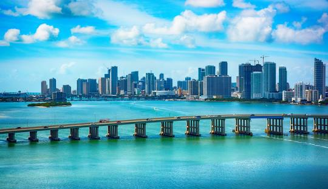

Have you ever thought about visiting the United States?

You can visit the United States for many reasons:
The USA is one of the most exciting countries in the world.
Firstly, you can visit the USA as a tourist and explore amazing cities:
New York
1. Famous attractions
New York is home to many famous places
like Times Square, Central Park,
and the Statue of Liberty.
2. Amazing city life
The city is full of restaurants,
shopping centers, and entertainment.
3. Cultural diversity
People from all around the world live in New York,
making it a very diverse and exciting city.

Miami
1. Beautiful beaches
Miami is famous for its sunny weather
and relaxing beaches.
2. Fun nightlife
The city has many clubs,
restaurants, and entertainment places.
3. Tropical atmosphere
Miami gives visitors a relaxing vacation
with palm trees and ocean views.
Secondly, you can study in the United States and enjoy a great educational experience:

Studying
1. World-class universities
The United States has many famous universities
like Harvard and MIT.
2. Different study programs
Students can choose from many majors
and educational opportunities.
3. International experience
Studying in the USA helps students
improve their language and communication skills.
Finally, you can work in the United States and build your future career:

Working
1. Big companies
The USA has many international companies
in technology, business, and engineering.
2. Career opportunities
Workers can find many opportunities
to improve their careers.
3. Professional experience
Working in the USA helps people
gain valuable international experience.